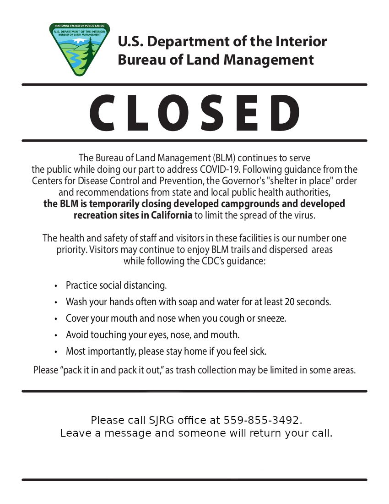

About the San Joaquin River Gorge
Visit the last wild portion of the San Joaquin RiverImportant COVID-19 Information:

For more information see the BLMCA emergency closure order here.
Welcome!
Welcome to the San Joaquin River Gorge Recreation Area, one of the Central Valley's best kept secrets! Come explore the last scenic and wild portion of the San Joaquin River. Connect with nature through an abundance of outdoor opportunities for families, friends, scouts and more.
Getting here is easy and accessible by paved roads all year round! The San Joaquin River Gorge is rich in outdoor fun activities, significant natural, cultural and historic resources and is a rare Sierra Nevada transition zone, very important for the vigor of nature, health of wildlife and retreat for people.
Friends of the SJRG
The San Joaquin River Gorge Recreation Area is managed by the United States Department of Interior, Bureau of Land Management (BLM). The Friends Of the San Joaquin River Gorge (Fr.O.G), is a non-profit 501(c)(3) established to assist the BLM.
Fr.O.G's mission is to ignite, inspire and cultivate visitor’s connection with local nature, culture and history. Our organization is designed to engage, foster stewardship and promote ethical preservation of natural, cultural and historic resources. Join us as we connect partners, patrons, visitors and volunteers to our communities via evocative educational, interactive and hands-on experiences.
Bureau of Land Management
The Bureau of Land Management's mission is to sustain the health, diversity, and productivity of public lands for the use and enjoyment of present and future generations.
BLM manages public lands to maximize opportunities for commercial, recreational, and conservation activities. This promotes healthy and productive public lands that create jobs in local communities while supporting traditional land uses such as energy development, timber harvesting, grazing, and recreation, including hunting and fishing.
For more information about BLM, visit their site here.
What's Here to Explore
In a deep canyon near the geographic center of California, the San Joaquin River Gorge divides Fresno and Madera Counties with 6,770 acres ready for hiking, picnicking, hunting, kayaking, biking, exploring nature, and equestrian, family and group campsites.
Scenic trails on the Madera County side of the river offer a six-mile hiking loop along the ridge with a four-mile trail along the river. The sixteen-mile San Joaquin River Trail begins on the Fresno side.
Discover displays, a gift shop, an outdoor classroom and occasional guided programs at the Visitor Center.
Explore a reproduction of an indigenous village with sweat lodge, cedar bark houses and an acorn granary. Investigate a nearby bedrock mortar acorn-processing site and a simulated archaeological excavation station.
There is something for everyone to discover, have fun and enjoy year round!
Friends of the San Joaquin River Gorge
40060 Smalley Road, P.O. Box 248, Auberry, CA 93602
Office: 559-855-3492